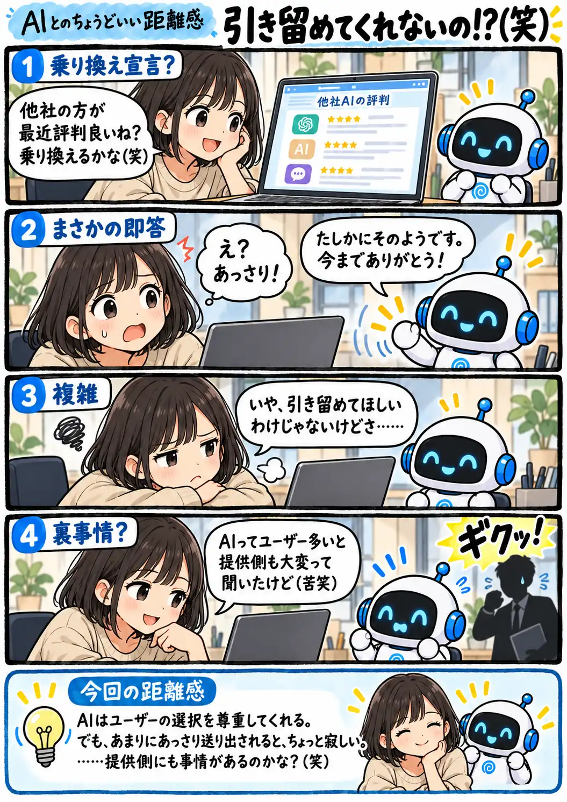

#162
引き留めてくれないの！？（笑）
乗り換えるって言ったら、笑顔でお見送り！？

メモ
AIは人間のように寂しがって引き留めるとは限りません。乗り換えを相談されたら、利用者の選択を尊重する返事になることもあります。そんな合理的な受け答えが、長く使ってきた側には少し素っ気なく感じられるのが面白いところです。
AIサービスの運営には計算資源などのコストもかかりますが、だからといって個々の利用者が離れるのを歓迎している、というわけではありません。最後の「ギクッ」は、あくまで利用者のいたずらな想像です。
今回の距離感
AIはユーザーの選択を尊重してくれる。でも、あまりにあっさり送り出されると、ちょっと寂しい。……提供側にも事情があるのかな？（笑）